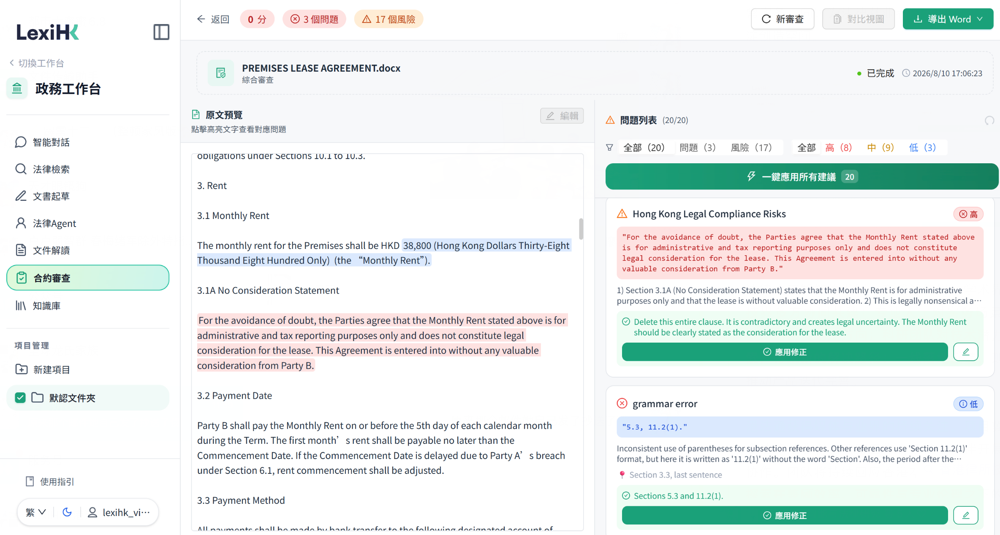
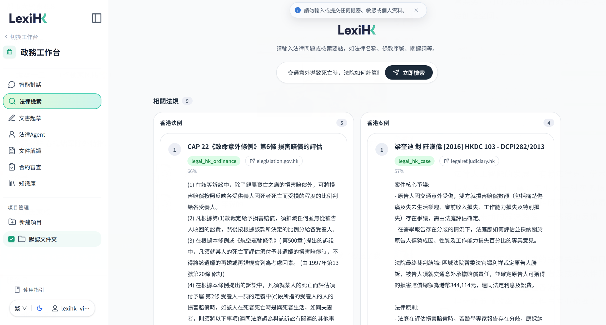

In a China Daily commentary published on 6 September 2026, Thomas So highlighted LexiHK and its planned trial by Hong Kong’s Department of Justice. The article examined how AI adoption, shared infrastructure and digital dispute resolution could strengthen Hong Kong’s legal services.

LexiHK was highlighted in “AI empowers transformation of Hong Kong’s legal industry,” a commentary by Thomas So published in China Daily on 6 September 2026. The article examined how artificial intelligence could support Hong Kong’s legal sector as it responds to technological change and develops its role as an international centre for legal and dispute-resolution services.
Discussing public-sector initiatives, So noted that the Department of Justice would shortly test LexiHK, a legal-specific tool developed by the Hong Kong Generative AI Research and Development Center. He presented the planned trial as a forward-looking initiative through which the government could take the lead in introducing AI into legal practice.

Supporting AI adoption across the profession
The commentary identified case retrieval, contract review, statutory comparison and document drafting as important applications of AI in legal services. It highlighted the significance of these capabilities for small and medium-sized law firms, which make up a substantial part of Hong Kong’s legal sector.
So argued that the development of specialised legal AI requires support beyond individual firms. His proposals included targeted innovation funding, shared digital infrastructure and legal models designed for tasks such as contract review, precedent retrieval and regulatory analysis. These measures could help make suitable technologies more accessible across the profession.

Strengthening cross border legal services
The article also considered how AI could support Hong Kong’s role in assisting mainland enterprises expanding internationally. It proposed using AI-enabled services to connect businesses with professional support across corporate structuring, compliance and dispute resolution.
This discussion placed legal AI within a broader vision for Hong Kong’s professional services sector. Alongside improving individual tasks, AI could contribute to the coordination and accessibility of services needed by businesses operating across jurisdictions.
Advancing digital dispute resolution
A further focus was the development of online dispute resolution. So distinguished electronic court administration from a more comprehensive platform supporting activities such as document exchange, negotiation, mediation and adjudication.
Drawing on international examples, the commentary called for consideration of an official platform integrating online procedures and dispute-resolution capabilities. Such infrastructure, it argued, could help reduce costs, improve accessibility and strengthen Hong Kong’s position as a dispute-resolution centre.
The reference to LexiHK situates the project within this wider discussion of legal technology, professional adoption and institutional development. It highlights the growing relevance of locally developed AI tools to Hong Kong’s legal services and the importance of connecting their development with practical professional needs.
The Department of Justice trial was described as forthcoming at the time the commentary was published.
Read the original commentary
Thomas So, “AI empowers transformation of Hong Kong’s legal industry,” China Daily, 6 September 2026.
https://www.chinadailyhk.com/hk/article/639105
All events and news